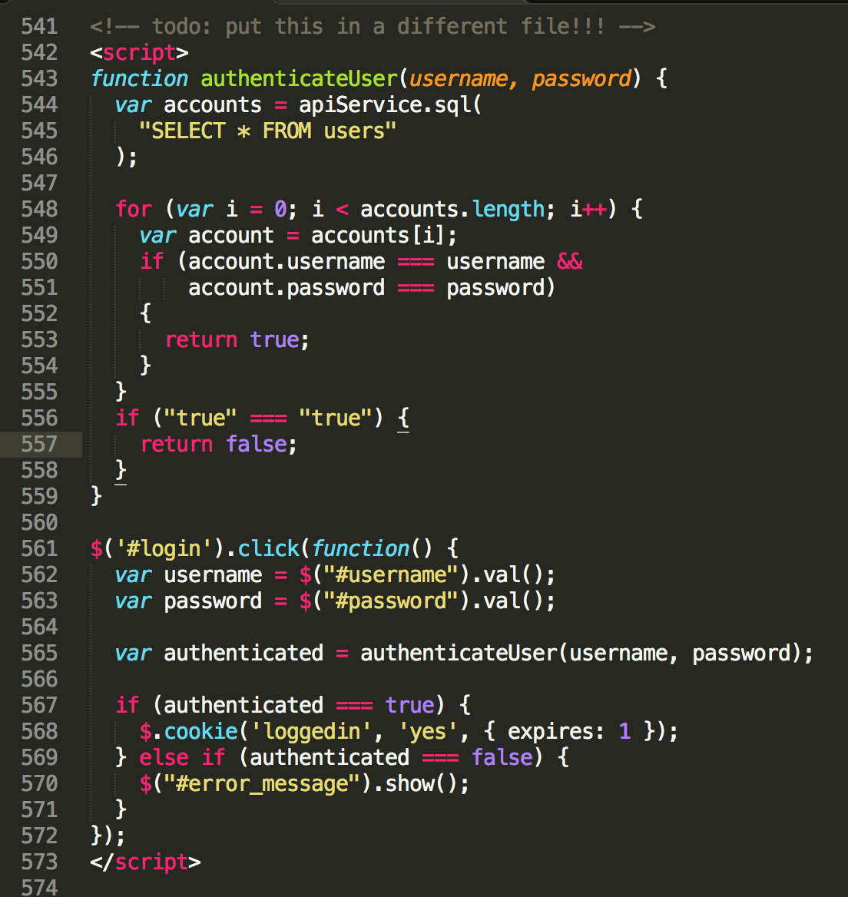

Diplomado JavaScript, CSS3 y HTML5
Creado por Marlenis Judith Concepcion Cuevas, disponible en Github
Saludos!!
Esta presentación tiene como finalidad introducirnos en algunos conceptos básicos de programación Web a la vez dar un poco a conocer mi persona.
HTML
Es un lenguaje de marcado que se utiliza para el desarrollo de páginas de Internet. Se trata de la sigla que corresponde a HyperText Markup Language, es decir, Lenguaje de Marcas de Hipertexto, que podría ser traducido como Lenguaje de Formato de Documentos para Hipertexto.

Referencias para aprender HTML

Curso Html en W3S
HTML5
Es la última versión de HTML. El término representa dos conceptos diferentes: Se trata de una nueva versión de HTML, con nuevos elementos, atributos y comportamientos. Contiene un conjunto más amplio de tecnologías que permite a los sitios Web y a las aplicaciones ser más diversas y de gran alcance. https://www.w3schools.com/html/html5_intro.asp.
Referencias para aprender HTML5
JavaScript
es un lenguaje ligero e interpretado, orientado a objetos con funciones de primera clase, más conocido como el lenguaje de script para páginas web, pero también usado en muchos entornos sin navegador, tales como node.js, Apache CouchDB y Adobe Acrobat. Es un lenguaje script multi-paradigma, basado en prototipos, dinámico, soporta estilos de programación funcional, orientada a objetos e imperativa.
Inicio de JavaScript

Referencias para aprender JavaScript
Ejemplo 1 JavaScript
Ejemplo 2 JavaScript
SCC
Siglas de Cascading Style Sheets(Hojas de Estilo en Cascada), describe la presentación de los documentos estructurados en hojas de estilo para diferentes métodos de interpretación. Desarrollada por el W3C,permiten la separación de los documentos escritos en HTML, XML, XHTML, SVG, o XUL de la presentación del documento con las hojas de estilo, incluye elementos como: los colores, fondos, márgenes, bordes, tipos de letra...,permitiendo a los desarrolladores controlar el estilo y formato de sus documentos.
Versiones CSS
Las versiones de CSS a lo largo de la historia han sido:
CSS 1: publicada en 1996.
CSS 2: publicada en 1998.
CSS 2.1: publicada en 2004.
CSS 3: publicada en 2011.
CSS 4: se estima que pueda ser especificación oficial en 2019.
Referencia CSS
Ejemplo CSS